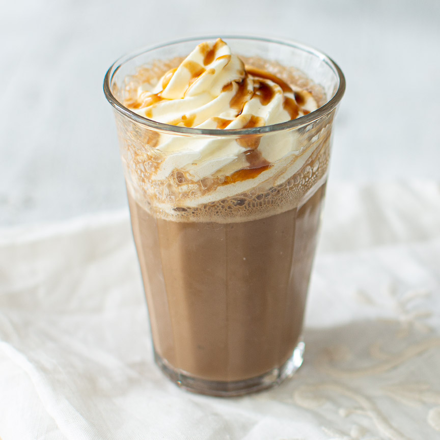

Ijskoffie
Makkelijk en snel binnen 10 minuten een heerlijke ijskoffie, lekker als nagerecht of als verkoelend tussendoortje.
Ingrediënten
- 150 ml afgekoelde koffie
- 1 groene paprika
- 100 ml melk
- 1 bol ijs (vanille of karamel )
- 1 banaan (optioneel)
- 2 a 3 ijsklontjes
- Snuf kaneel
- Slagroom
Bereidingswijze
- Doe alle ingredienten (behalve de slagroom) in een blender en mix door elkaar.
- Giet de ijskoffie in een groot glas en spuit er eventueel wat slagroom op.
- Garneer met wat extra karamel siroop of stroop. Tip: deze ijskoffie is lekker met een scheutje amaretto of whisky.
